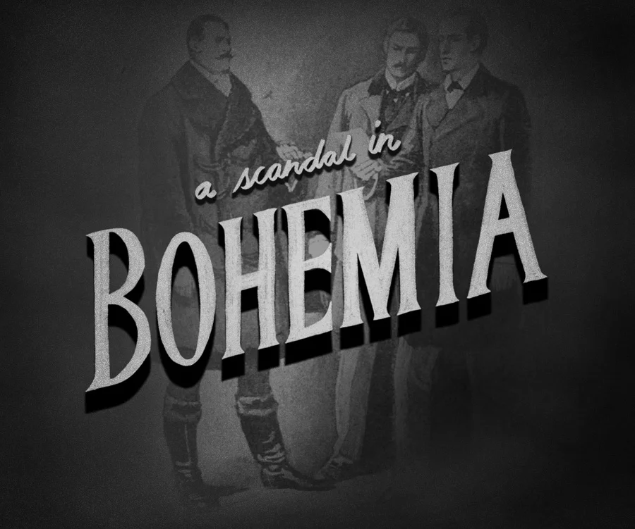
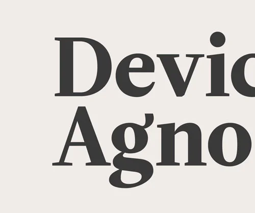

-
Voyager is out! Listen on on Spotify, Apple Music, Bandcamp, or most anywhere you like to stream music.
-

I am transferring my font-shopping bookmarks to a webpage so you can see them too. Browse by display, sans, and serif fonts here.
-

We shipped Sherlock Holmes: A Scandal in Bohemia in an immersive-responsive-website-book-thingy format.
-

We recently updated paravelinc.com with a services section that includes pages about design systems and prototypes. Read more about it here.
-
Near and dear to our hearts, DayTrip is a Paravel project designed to make it easy to find something great to do and someplace great to go. Austin/Texas area private beta out now.
-

We published two new TMFO posts. One for Burt Reynolds, and another one called Punch Dancing.
-

Device Agnostic summarizes how I view and approach building for the web. My perception has been shaped while working on responsive, component-based systems on a large-ish scale.
-
I was thrilled that Typekit and Dave Shea asked me to contribute a theme to CSS Zen Garden to celebrate its recent responsive update. Read about the process here and here.